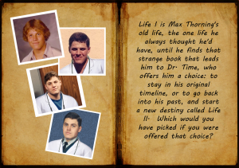
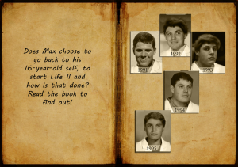

From the journal
Salute to "Back to the Future"
October 26, 1985... Marty McFly heads back to November 5, 1955
October 27, 2013... Max Thorning heads back - this time to his sixteen-year-old self - to September 16, 1987.
Check out the terrific review of "Life II", ironically posted on an important anniversary date for Back to the Future... October 26, 2013.
http://magnoliablossomreview.blogspot.com/2013/10/scott-spotson-life-ii.html
And... check out "Life II" on the "Fussy Librarian," on an important anniversary date (it hasn't become an anniversary yet!), October 27, 2013.
Sign up to received personalized reading recommendations from other 30 genres! http://www.thefussylibrarian.com/
October 27, 2013... Max Thorning heads back - this time to his sixteen-year-old self - to September 16, 1987.
Check out the terrific review of "Life II", ironically posted on an important anniversary date for Back to the Future... October 26, 2013.
http://magnoliablossomreview.blogspot.com/2013/10/scott-spotson-life-ii.html
And... check out "Life II" on the "Fussy Librarian," on an important anniversary date (it hasn't become an anniversary yet!), October 27, 2013.
Sign up to received personalized reading recommendations from other 30 genres! http://www.thefussylibrarian.com/



